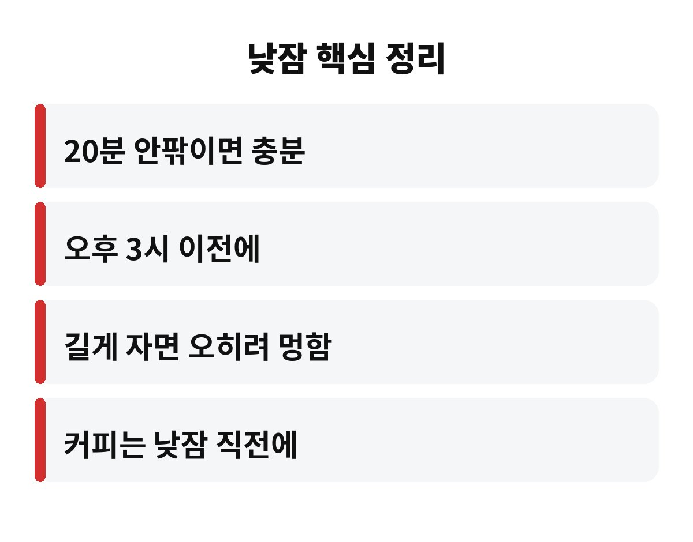
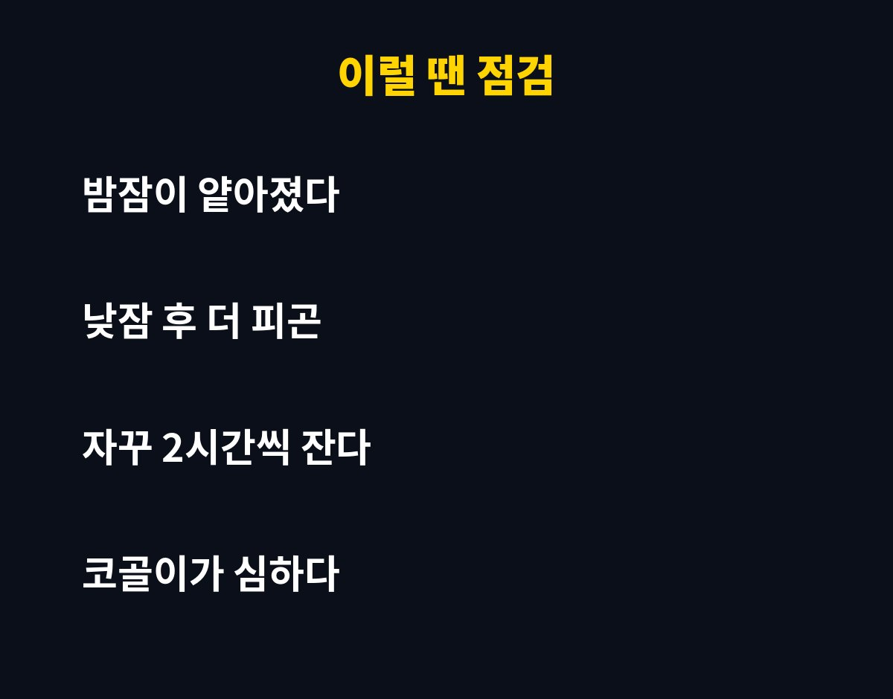

낮잠 20분은 오후 졸음을 가장 깔끔하게 털어내는 길이로 널리 알려져 있고, 1시간 가까이 자면 오히려 더 멍해질 수 있어요. 점심 먹고 눈꺼풀이 무거워지는 직장인이라면, 내 낮잠이 약인지 독인지 궁금하지 않으세요?
같은 낮잠인데 누구는 개운하게 일어나고 누구는 하루 종일 머리가 무겁다고 해요. 차이는 생각보다 단순한 데서 갈려요. 오늘은 그 이야기를 편하게 풀어볼게요.
잠은 얕은 잠에서 시작해 점점 깊은 잠으로 내려가요. 낮잠 20분 안팎은 아직 얕은 잠 단계에 머무르는 시간이라, 눈을 뜨면 비교적 가볍게 깨어나요. 반대로 깊은 잠에 들어갔다가 억지로 깨면 몸이 아직 자는 중인데 알람만 울린 꼴이 되죠.
그래서 낮잠 20분이 오후 집중력을 올리는 데 유리하다고 설명하는 경우가 많아요. 물론 사람마다 체질과 수면 부족 정도가 달라서 딱 몇 분이 정답이라고 단정하긴 어려워요. 다만 짧게 자는 쪽이 부담이 적다는 건 꽤 공감하는 분이 많을 거예요.

낮잠이 길어지면 깊은 잠까지 내려가기 쉬워요. 이때 깨어나면 한동안 멍하고 몸이 무겁고, 기분까지 가라앉는 느낌이 들 수 있어요. 흔히 수면 관성이라고 부르는 현상이에요.
게다가 낮에 오래 자면 밤에 쓸 잠을 미리 당겨 쓴 셈이라 저녁에 잠이 안 올 수 있어요. 그럼 다음 날 또 졸리고, 또 낮잠을 길게 자는 악순환이 시작되죠. 낮잠 20분과 1시간의 가장 큰 함정은 바로 이 밤잠 리듬이 깨지는 부분이에요.
그렇다고 길게 잔 날을 자책할 필요는 없어요. 정말 피곤한 날엔 몸이 필요해서 자는 거니까요. 다만 습관처럼 굳어지지 않게 가끔 점검해 보자는 얘기예요.
시간대는 점심 직후부터 오후 3시 이전 사이가 무난하다고 알려져 있어요. 너무 늦은 오후에 자면 밤잠에 영향을 주기 쉽거든요. 자세는 가능하면 완전히 눕기보다 의자에 기대어 가볍게 자는 편이 깊은 잠으로 빠지는 걸 막아줘요.
알람은 꼭 맞춰 두세요. 잠깐 눈만 붙인다던 게 한 시간이 되는 건 직장인들의 흔한 일이니까요. 낮잠 20분 직전에 커피 한 잔을 마시는 방법도 많이들 써요. 카페인이 효과를 내는 시간과 깨어나는 시간이 맞물려서 개운하게 느껴질 수 있다고 하거든요. 다만 카페인에 예민하다면 무리하지 마세요.
빛과 소음도 챙겨 보세요. 눈을 가리고 이어플러그를 쓰면 짧은 시간에도 훨씬 푹 쉬었다는 느낌이 들어요.
낮잠을 자도 자도 개운하지 않다면 낮잠 길이보다 밤잠의 질을 먼저 살펴보세요. 아래 표처럼 간단히 점검해 볼 수 있어요.
| 상황 | 먼저 해볼 일 |
| 밤에 자주 깬다 | 잠들기 전 스마트폰·카페인 줄이기 |
| 낮잠 후 더 피곤하다 | 낮잠을 20분 안팎으로 줄여 보기 |
| 코골이·숨 막힘이 심하다 | 수면 클리닉이나 병원 상담 |
| 몇 주째 이어지는 졸림 | 전문의 진료 받아 보기 |
특히 코를 심하게 골거나 자는 동안 숨이 막히는 느낌이 있다면, 낮잠 문제가 아니라 수면의 질 문제일 수 있어요. 이런 경우엔 혼자 고민하지 말고 병원에서 확인해 보는 게 좋아요.

거창하게 시작할 필요는 없어요. 먼저 일주일 동안 내가 낮잠을 몇 시에, 얼마나 자는지 휴대폰 메모에 적어 보세요. 막상 기록해 보면 생각보다 길게 자고 있거나, 반대로 거의 못 자면서 피곤하다고 느끼는 경우가 많거든요. 기록이 쌓이면 나에게 맞는 낮잠 시간이 슬슬 보이기 시작해요.
그다음엔 낮잠 시간을 20분 안팎으로 맞추고 알람을 두 개 걸어 두세요. 첫 알람에 못 일어나는 날이 많다면 전날 밤 수면이 부족했다는 신호일 수 있어요. 이때는 낮잠을 늘리기보다 오늘 밤 잠자리에 드는 시간을 30분만 앞당기는 편이 훨씬 효과적이에요.
또 하나, 점심시간에 가볍게 햇볕을 쬐며 걷는 것도 졸음 쫓는 데 도움이 돼요. 낮잠과 산책을 번갈아 해 보면 오후 컨디션이 확실히 달라졌다는 분들이 많아요. 졸음을 무조건 참기보다 내 몸이 보내는 신호로 받아들이면 마음이 한결 편해져요.
정리하면 낮잠 20분은 가볍게 충전하는 용도, 1시간은 밤잠을 위협할 수 있는 선택지에 가까워요. 오늘 점심 뒤엔 알람부터 맞추고 눈을 붙여 보세요. 여러분은 낮잠을 보통 몇 분이나 주무시나요? 댓글로 알려 주시고, 도움이 됐다면 구독도 눌러 주세요.
※ 이 글은 일반적인 건강 상식을 담고 있으며 개인별 상태에 따라 다를 수 있어요. 증상이 계속되면 반드시 전문의 상담을 받으세요.